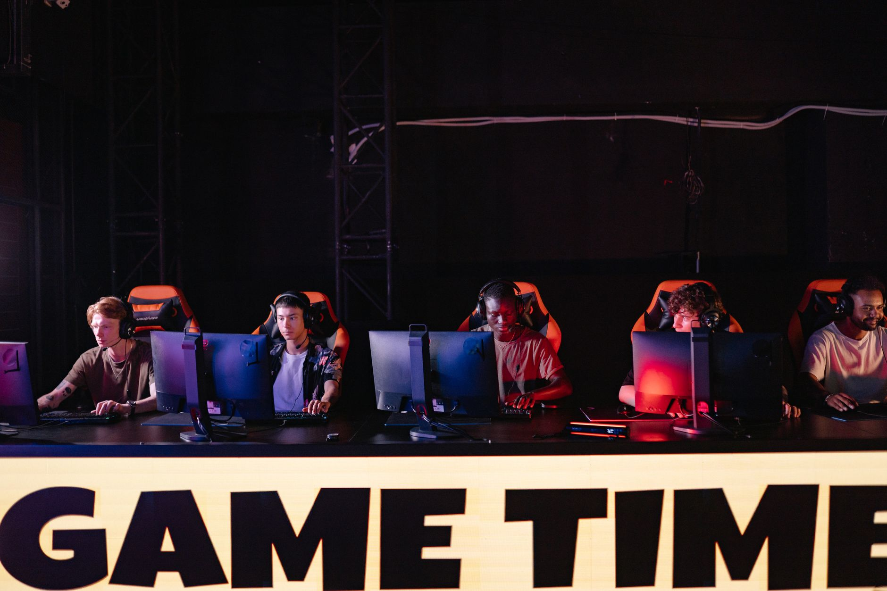

The road to the ESL Pro League S24 grand final
The journey to the ESL Pro League S24 grand final has been nothing short of spectacular. Throughout the season, we have witnessed incredible upsets, tactical masterclasses, and individual performances that have left fans breathless. The competition has narrowed down the field from dozens of elite teams to just the most consistent and dominant rosters in the world of Counter-Strike 2.
To reach this stage, teams had to navigate through grueling group stages and intense playoff brackets. Each match served as a litmus test for mental fortitude and strategic depth. The teams that have emerged for this final showdown have proven they can handle the pressure of a live crowd and the scrutiny of a global digital audience.
Live match coverage and map analysis
As the grand final unfolds, our live updates provide a play-by-play breakdown of every crucial moment. We are tracking map picks, economy management, and the momentum shifts that define professional CS2. Whether it is a clutch 1v3 or a perfectly timed utility execute, we ensure you do not miss a single beat of the action.
The map pool for this final is diverse, forcing captains to demonstrate their flexibility. We are seeing heavy emphasis on strategic positioning and the ability to adapt to mid-round calls. As teams cycle through maps like Mirage, Nuke, and Inferno, the tension in the arena continues to climb, making every round a potential turning point for the championship.
The level of precision we are seeing in this grand final is unlike anything else in the current CS2 competitive circuit.
Key players to watch during the championship
While teamwork is the foundation of victory, individual superstars often decide the fate of a grand final. We are keeping a close eye on the top fraggers who are consistently finding opening kills and holding critical sites. These players are not just playing a game; they are performing on the biggest stage possible.
Watch for the entry fraggers who take the necessary risks to create space, as well as the in-game leaders who maintain composure when the scoreline looks grim. The ability to remain calm under the bright lights of the ESL stage is what separates the legends from the contenders.
The impact of high-stakes esports competition
Competing at this level requires more than just fast reflexes. It requires an immense amount of mental energy and physical stamina. The grueling schedule of the ESL Pro League means players are often playing multiple matches a day, often across different time zones, which can take a significant toll on their well-being.
As the intensity of the grand final reaches its peak, it is important to recognize the human element behind the screens. The pressure to perform for millions of viewers and the drive to win prestigious trophies can lead to significant stress. Understanding this balance is vital for the long-term health of the professional gaming community.
Looking ahead to the future of CS2 esports
Once the trophy is hoisted and the celebrations begin, the esports world will already be looking toward the next major tournament. The ESL Pro League S24 has set a high bar for production quality and competitive integrity, proving that Counter-Strike 2 remains a powerhouse in the esports industry.
However, as the competitive calendar becomes increasingly packed, the industry must address the sustainability of player careers. For more insights into the challenges facing professional gamers, you should read our recent article on Esports Burnout: sidde Warns of Major Fatigue Risks at https://dhyey.bond/blog/esports-burnout-sidde-warns-of-major-fatigue-risks/ to understand the risks of the current grind.
See Also
If you enjoyed this Esports News article, check out Esports Burnout: sidde Warns of Major Fatigue Risks for more useful reading.